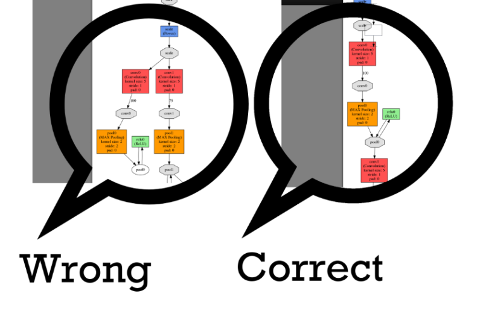

The 2nd lesson of NVIDIA’s free course on Deep Learning was about DIGITS. DIGITS is an open source tool built from NVIDIA to design, visualize, train and test Deep Neural Networks (DNN) for the Caffe framework (please read my appeal at the end of the article).
The lesson starts with a quick overview about the tool and its functionality:
The course proceed with some indications on how to install DIGITS on your system and the hardware and software requirements for the installation (you are not going to require anything to play with DIGITS in the lesson’s Lab, as in the first lesson you will be provided with a cloud environment running on AWS Linux GPU Instance with all the required software installed and ready for the use).
In the final part of the lesson there is a quick overview on all the screens and functionality offered by DIGITS, and on what you will be requested to do during the subsequent lab.
I found interesting the part about Data Augmentation: if my training data set includes only numbers with white background, will the trained model be able to recognize the same number on a colored or black background? Quick answer: no, it will not, but the class provides practical instructions on how to address the issue.
After the introductory lesson, this was the first “practical” class of the course and I liked it more than the previous one, even if the sound quality and the volume of the recording were very poor.
After a waiting a couple of minutes for the initialization of the remote environment, you will be redirect to an IPython notebook webpage, containing all the instructions on the 5 tasks composing the lab. You will need to perform the tasks using the DIGITS web-gui. You will be able to play around with DIGITS for around 2 hours, then the lab will expire.
The tasks you are going to perform include dataset creation, creation of 1 default and 2 customized image classification models, training and test of such models.
You are going to use the MNIST database of handwritten digits (available on the machine) to create a dataaset and try to recognize some images of digits that are not part of the dataset.
The network architecture you are going to use is one of the three default “famous” networks provided by DIGITS: in particular it’s a version of LeNet network, a 1990s network pretty simple if compared to newer networks, such as AlexNet (2012), GoogleNet (2014) and VGG (2014). Having a such simple network allows you to keep an high value for the batch size parameter (the number of the images processed at a time in the network): you will be able to track the RAM usage of the process during the training: you will nowhere get close to the 4GB limit of the provided hardware.
Beginning with a simple network allows to iterate the training an higher number of times: you can set how many times the whole dataset will be ingested by the network through the parameter “Training Epochs”. You will start with 30 epochs in task #2, but as soon as you will add complexity to the network (tasks #3 and #4) you will have to decrease the number of epochs. In task #3 you are prompted to set the number of epochs to 2, I did so but the network I had trained performed poorly: I could anticipate it just by looking at the training indicators: the model had not reached an optimal validation accuracy rate, probably because I was unlucky with random weight initialization and 2 epochs were not enough to recover from such situation…
One last thing about the lab: the instructor was right during the lesson about the importance of network's diagram visualization! While editing the network to complete one of the tasks, I had made some mistake, resulting in a convolutional layer not leading anywhere. Looking at the diagram it was evident that something was wrong (in the image below, the network on the left has a split leading to a dead end), so I double checked the network definition, found the mistake, fixed it, and finally obtained the correct arrangement for the network (the right network in the image below).

One last thing about the lab: the instructor was right during the lesson about the importance of network’s diagram visualization! While editing the network to complete one of the tasks, I had made some mistake, resulting in a convolutional layer not leading anywhere. Looking at the diagram it was evident that something was wrong (left network displays a split leading to a dead end in my network, so I double checked the network definition, found the mistake, fixed it, and finally obtained the correct arrangement for the network (the right network in the image).
I have tinkered with few Deep Learning networks and frameworks over the past months, and as far I have seen DIGITS is the most user-friendly training tool I encountered. Unfortunately it only train models for the Caffe framwork, so if you are not using Caffe for your Deep Learning projects, you have two options: forgetting about DIGITS or using some static or real-time conversion tool in order to use Caffe’s models with the others Deep Learning frameworks.
I have seen there are some interesting projects in this area for Theano and Torch7. Unfortunately there is not such tool for other less famous frameworks like libccv and DeepBeliefSDK*. Such frameworks have very bad or non-existing training tools, so tried to do some work in this direction: I improved an hidden conversion feature to translate models from libccv to DeepBeliefSDK and I started the creation of a tool to convert caffe models in libccv format (or at least some of them, some caffe models could be not straight-translatable into ccv format). Unfortunately I am not a great low level programmer (I know few programming languages, but I am definitely not a C/C++ engineer), and I have also run out of time, so I discontinued the project when it was (I think) close to its end…
So the appeal is this: I am hoping someone will continue my caffe-to-libccv conversion tool and complete it, allowing developers to write their own libccv/DeepBeliefSDK applications using models trained with DIGITS and translated immediately after. Feel free to contact me and ask informations on what it is missing to do and which were the issues that blocked me.
*this one has been discontinued from its creator, but at the moment it has a very good iOS implementation and also a working (I personally contributed with some fixes) yet less performant Android implementation (still better than the caffe-for-android project, that requires 2GB ram for the AlexNet-like network and has other flaws).
I worked to a prototype for a stillborn startup in the last year, and I shared with Francesco Pugliese the vision that Deep Learning tasks should not be segregated into cloud datacenters, they should be everywhere, on everyday devices (while today it’s questionable if we have enough distributed computing power to do so, Moore’s law and exponential grow support our vision). In this setting, the importance of DeepBeliefSDK is evident (until the creation of another optimized framework for running Deep Learning classification tasks on low power devices).